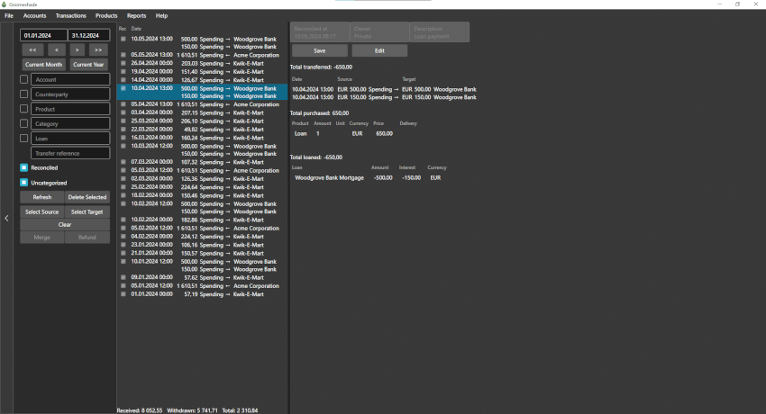
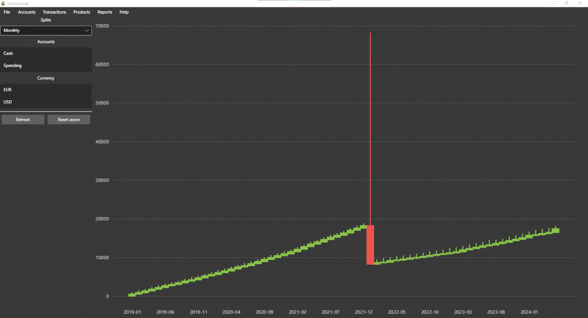
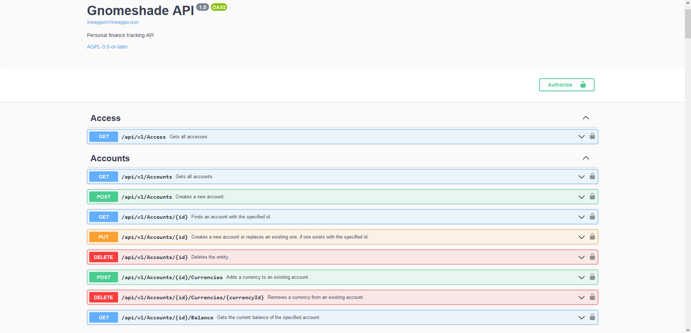

Gnomeshade
A free and open source self-hosted personal finance tracker
Features
Transaction management
Gnomeshade features a double-entry bookkeeping system. You can quickly enter and organize your transactions in multiple currencies.
Automatically import transactions
Automatically sync transactions from your bank using Nordigen or import ISO 20022 reports.
Automatically categorize purchases
Link receipts from paperless-ngx to transactions and automatically categorize the purchases.
Multi-user support
Multiple users can register and share accounts using either built-in authentication or OIDC.
Informative reports
Gnomeshade has advanced reporting capabilities, showing your total balance, spending per category and prices over time. It can also show how much you've paid or received from different accounts or counterparties.
REST API
All functionality used by the desktop client application is available via a REST API, and a .NET API client is available as a NuGet package.
